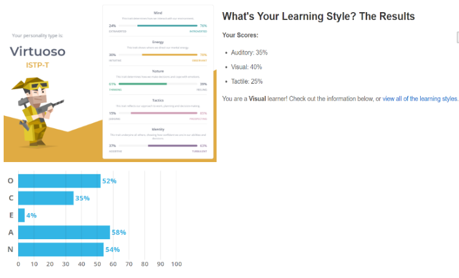
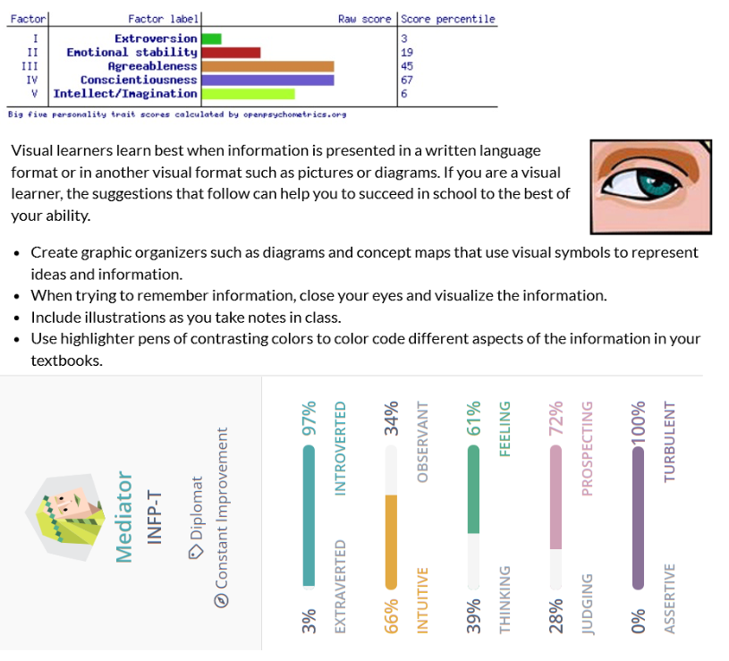
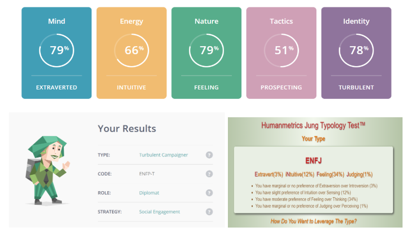

Personality Profiles
Angus
The OCEAN test highlights that I am capable of working effectively within groups and that written messages are what I am most receptive to which worked out well since a group chat was the preferred method of communication in the group. Paired with someone with leadership capabilities I will be enabled to work more efficiently.
Jess
With my big 5 personality test it put my agreeableness at a high percentage which makes me great in team situations as I'm always open and listening to other ideas and am never one to shut someone down. Scoring a 97% for introvertedness will hinder my communication ability when it comes to discussing group work face to face but I believe I am excellent at communicating online behind the comfort of my computer screen.
Asher
Primarily, I am a visual learner and someone who is able to productively and consistently offer new ideas or alternatives. My weakness would be my ability to work in a pre-established and repetitive way that offers little to no creativity or customisation.
